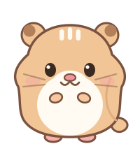
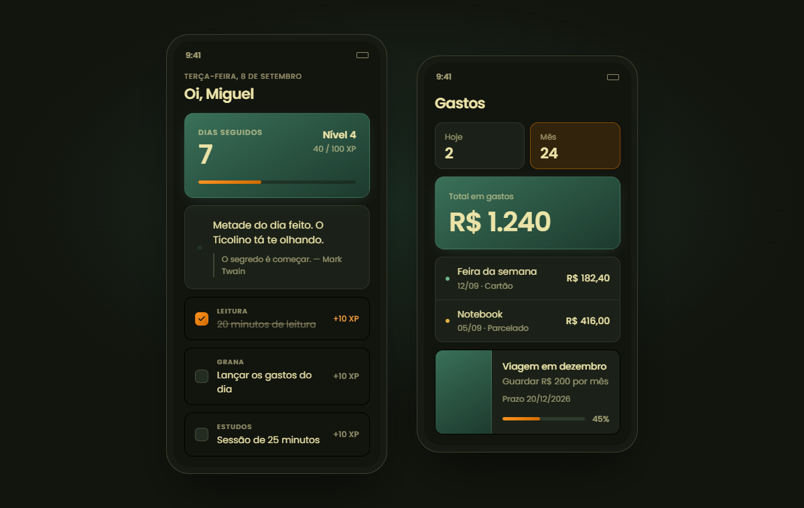

Em desenvolvimento
Sua vida inteira
Sua vida inteira
em um app só.
Estudos, gastos, leitura, exercícios, metas, tarefas e notas. Tudo no mesmo lugar, fácil de usar — sem precisar de um aplicativo diferente para cada parte do seu dia.
Quero conhecer o Mindt ↓
Por dentro
O app hoje

Um app, onze telas
Cada parte do dia tem seu lugar, e o Ticolino conecta tudo na Home.
- Metas
- Tarefas
- Gastos
- Agenda
- Estudos
- Exercícios
- Leitura
- Notas
- Resumo
Quem é o Ticolino
É o hamster que mora dentro do Mindt. Ele guarda o que você precisa fazer, lembra na hora certa e comemora quando o dia fecha. Ele lembra, você vive.
Entrar na lista
Quer conhecer por dentro?
Deixe seu e-mail
O Ticolino te manda uma apresentação do Mindt e o link pra usar.
Um e-mail só. Sem spam, e você sai quando quiser.
Anotado!
Olha sua caixa de entrada em instantes. Se não chegar, dá uma espiada no spam.